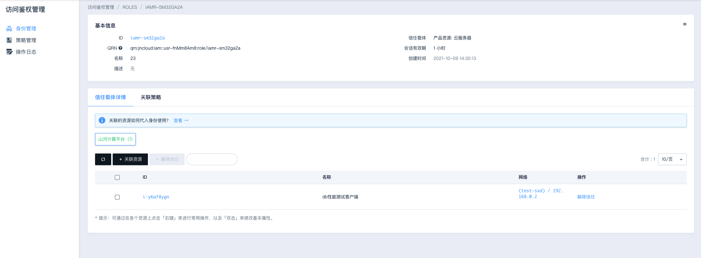
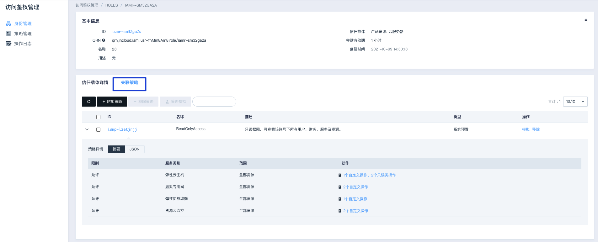
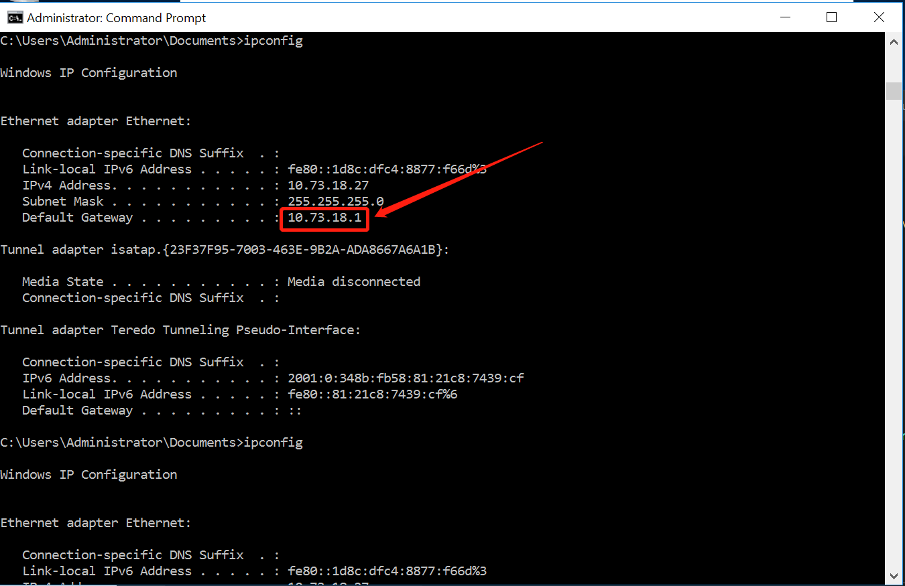
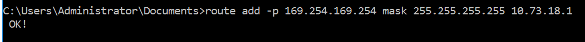
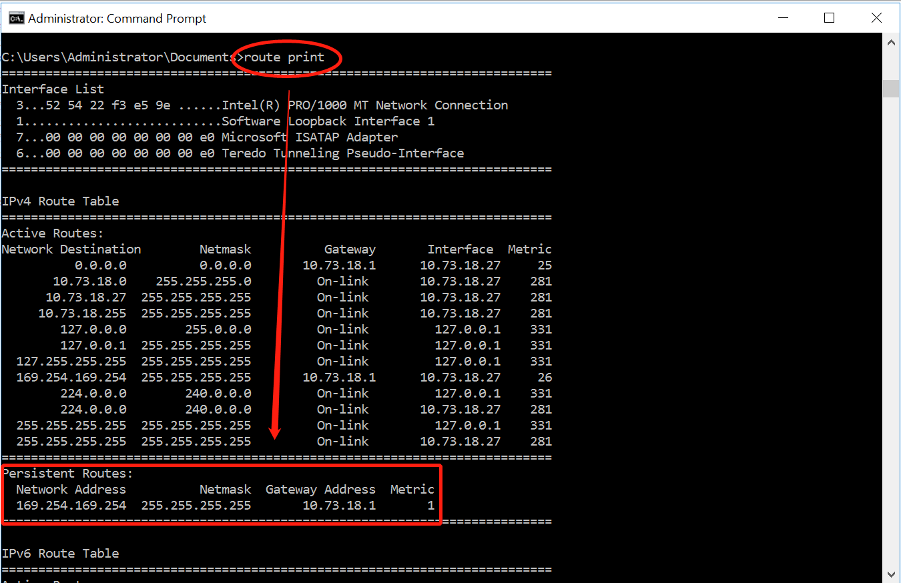
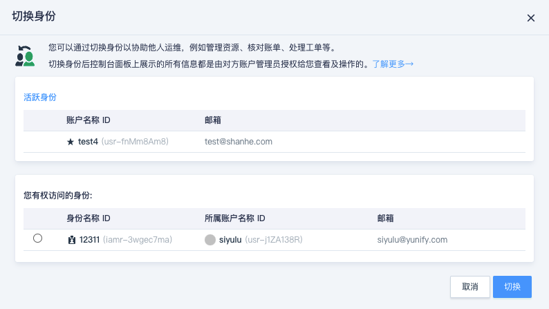
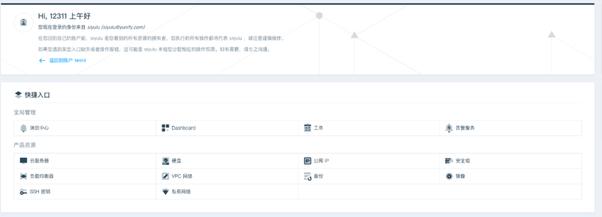
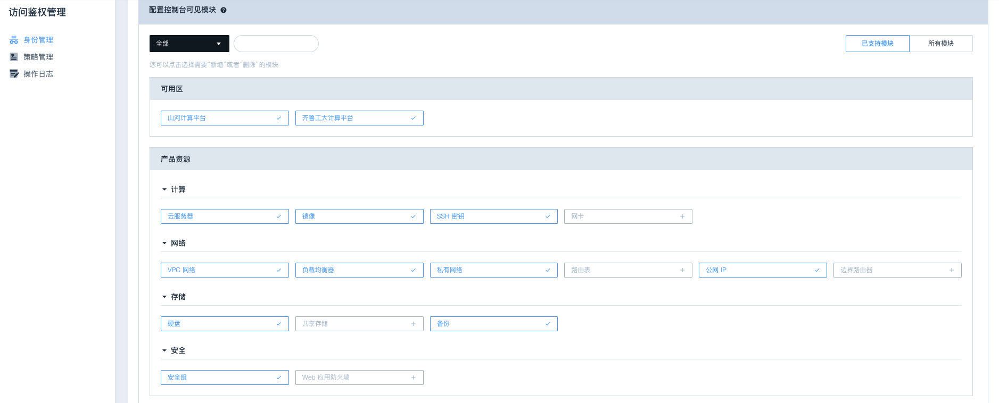
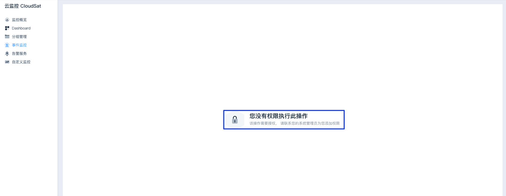
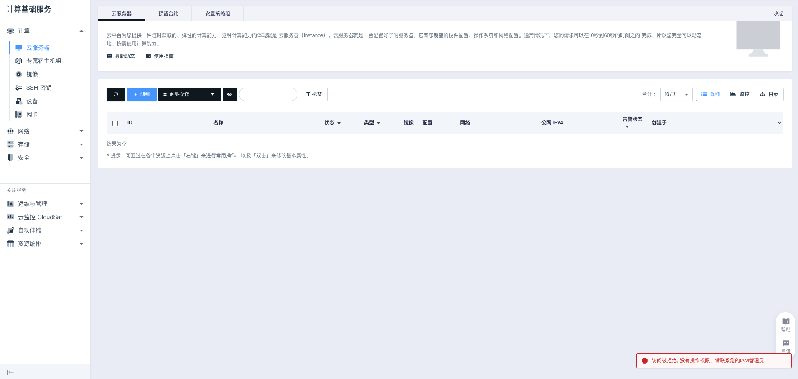

如何使用身份
代入使用的前提
代入身份的实体，必须是该身份的信任载体。
若您尚未为该实体创建身份，或者尝试代入错误的身份，您在该实体上的任何身份使用操作都将遭到拒绝。
代入身份方式一：利用 SDK 开发应用
说明
该方式可以让授权云服务器（信任载体）上的应用程序（ APP 或 SDK 等）通过获取云服务器临时安全凭证来执行身份允许的操作，从而屏蔽因 Access_Key 和 Secret_Key 泄露导致的安全问题。
使用示例：
-
给云服务器绑定已经赋予一定权限的身份，可在该身份详情页下的
信任载体详情中看到云服务器信息：
-
切换
关联策略选项卡，查看该云服务器已拥有的权限：
-
访问该云服务器终端，可使用 pip 安装 SDK: （点此了解更多 SDK 文档信息）。
pip install yiqiyun-sdk如果你已安装 SDK 并需要更新到最新版本，参考如下示例：
pip install --upgrade yiqiyun-sdk -
使用 SDK ，以 Python 语言为例 (无需提供 access key id 和 secret access key)：
执行
#API Connection from yiqiyun.iaas import APIConnection conn = yiqiyun.iaas.connect_to_zone( 'jn1', # 你的资源所在的节点ID，可在控制台切换节点的地方查看，如 'jn1' 等 None, None ) ret = conn.describe_routers() # 查看路由器信息 print(ret)输出
如果该云服务器绑定的身份拥有允许访问路由器的权限，执行上述实例代码后输出结果：
DescribeRouters: {u'action': u'DescribeRoutersResponse', u'router_set': [...], u'ret_code': 0, u'total_count': 1}如果该云服务器绑定的身份没有附加访问路由器的权限，执行上述实例代码后输出结果：
DescribeRouters: {u'message': u'PermissionDenied, IAM authorization evaluate deny', u'ret_code': 1400}
说明
如果您是在 Windows 云服务器上开发应用，需要先参考下文配置路由才可使用。
Windows 云服务器路由配置
配置方法如下：
-
打开 cmd 命令行工具，执行
ipconfig获取本机 IPv4 默认网关地址：
-
执行命令
route add -p 169.254.169.254 mask 255.255.255.255 默认网关地址，将 IAM 的凭证颁发中心的固定地址169.254.169.254配置到该云服务器的默认网关路由中即可：
-
添加成功后，可执行命令
route print以查看该路由配置是否生效：
Windows 云服务器上配置好路由后，代入身份开发应用的方法与前文描述一致。
代入身份方式二：控制台“切换身份”
当他人将您的账户 ID 作为信任载体创建身份后，您可以登录到控制台使用此方法访问对方的账户以辅助其运维。
-
登录控制台，鼠标移至界面右上角头像处，点击切换身份即可查看您有权限访问的所有身份列表。

-
选择您要代入的身份后，点击切换，页面跳转至该身份所代表的操作空间。在该操作空间内，执行的所有操作都受到该身份上所附加策略的限制，并将代表该身份属主进行操作。

说明
您可能注意到可供您操作的模块有限（页面提示[
您没有权限执行此操作]），这是因为该身份属主在身份上配置了可见模块，您只能被允许访问这些可见模块。身份属主的可见模块配置：
身份使用者的访问提示：
-
如果在代入身份后的操作过程中界面右下角出现提示 [
访问被拒绝...] ，则代表您当前代入的身份没有权限执行该操作，当前操作失败。如需要执行该操作的权限，可联系身份拥有者通过策略配置授予相应权限。
-
如需要退出身份代入，您可以在“工作台”页点击“返回到账户”链接，或点击头像处个人菜单的回到账户。